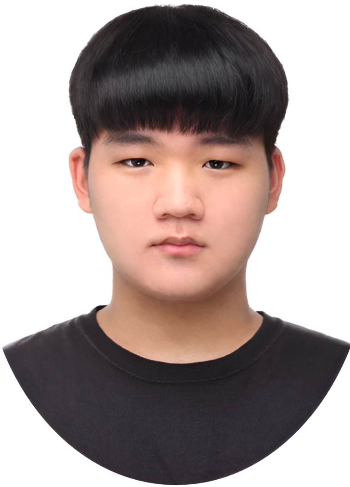

|
Jungwoo Kim
My name is Jungwoo Kim.
I am a M.S./Ph.D student at the MCML Group, under the supervision of Prof.
Prof. Jong-Seok Lee.
I have a broad interest in various research areas that utilize machine learning and computer vision.
Especially, I'm currently interested in image compression for machine (ICM) and Diffusion Models.
|

|
Recent News
-
2026.06.
📝 One paper accepted at ICML 2026 Workshop on Machine Learning for Audio!
-
2026.05.
📝 A new preprint Mosaic is now released!
-
2026.04.
📝 One paper accepted at ICIP 2026!
-
2026.02.
✈️ Attending IPIU 2026 held in Jeju, Korea.
-
2026.01.
🔥 Newly joined MAAP Lab at MODULAB. I'm now expanding my research to Music AI!
-
2025.12.
📝 A new preprint PICM-Net is now released!
-
2025.09.
✈️ Attending MMSP 2025 held in Beijing, China. I'm going to present my work CSAT!
-
2025.08.
📝 One paper accepted at MMSP 2025!
-
2025.08.
✈️ Attending KCCV 2025 held in Busan, Korea.
-
2025.03.
🔥 Joined MCML Group at Yonsei University as an Integrated M.S./Ph.D student.
-
2025.02.
✈️ Attending KICS Winter Conference 2025 held in Pyeongchang, Korea.
-
2025.01.
✈️ Attending IEIE Winter Workshop on Image Understanding held in Hongcheon, Korea.
-
2024.12.
🔥 Newly launched my homepage!
|
Education
Yonsei University, Seoul, Republic of Korea
M.S./Ph.D student in School of Integrated Technology
Mar. 2025 - Present
Yonsei University, Seoul, Republic of Korea
B.S. in School of Integrated Technology (GPA: 3.95 / 4.30)
Mar. 2022 – Feb. 2025
* One year early graduation.
|
Research Interests
My primary research goal is to understand how deep learning models work and to utilize them in various research areas, especially in computer vision.
So my primary research interest just lies in various topics about machine learning and computer vision, covering my goal.
Currently, I'm interested in Image Compression for Machine, Diffusion Models, Explainable AI, etc. In the past, I have also studied Graph Neural Network (GNN), Reinforcement Learning (RL) and Natural Language Processing (NLP), especially about evaluating the performance of large language models.
|
Publications
P Preprints
C Conference Papers
J Journal Papers
2026
Preprint
Mosaic: Compositional Multi-Concept Erasure via Vector Field Blending
Junseok Ko, Jungwoo Kim, Jong-Seok Lee
Preprint
Diffusion Models
Responsible AI
ABS
Concept erasure has emerged as a key research direction for ensuring safe and ethical image synthesis in Text-to-Image (T2I) models. While existing studies have explored concept erasure across multiple concepts, they typically assume only single target concept per image-a limitation increasingly exposed by modern flow-based T2I models, which can generate complex scenes with multiple concepts simultaneously. To address this gap, we introduce compositional multi-concept erasure, a new task that aims to simultaneously remove multiple target concepts within a single scene. We propose CoME-Bench, a benchmark for evaluating compositional multi-concept erasure, which covers both intra- and cross-category scenarios. We further propose Mosaic, a novel framework for multi-concept erasure in flow-based T2I models, which exploits the spatial locality of target concepts in the vector field by dynamically constructing concept-specific masks and selectively blending them without additional optimization. Extensive experiments demonstrate that Mosaic effectively removes multiple target concepts in complex compositional scenes while preserving non-target contexts.
arXiv
ICIP'26
Coarse-to-Fine: Progressive Image Compression for Semantically Hierarchical Classification
Jungwoo Kim, Jun-Hyuk Kim, Jong-Seok Lee
2026 IEEE International Conference on Image Processing (ICIP 2026)
Learned Image Compression
Image Compression for Machine
ABS
Recent advances in learned image compression (LIC) have enabled practical deployments, spurring active research into image compression for machines and progressive coding schemes. However, their integration remains under-explored: prior works on progressive machine codec predominantly target sample-level difficulty adaptation (i.e., easy-to-hard), without considering semantic-level scalability. In this work, we introduce a semantic hierarchy-aware progressive codec that enables semantic scalability (i.e., coarse-to-fine) from a single bitstream. We first systematically categorize ImageNet-1K classes into CLIP embedding-based semantic hierarchies. Based on a channel-wise autoregressive framework, we decompose latent representations into hierarchically ordered channel blocks, each explicitly optimized for its corresponding semantic hierarchy level. Extensive experiments demonstrate that our approach substantially improves coarse-level recognition at low bitrates while maintaining fine-grained accuracy at higher bitrates. By reframing progressive transmission through the lens of semantic scalability, our work provides an efficient and interpretable solution for task-adaptive image coding, outperforming existing progressive codecs under hierarchical evaluation.
arXiv
ICMLW'26
Probing Token Spaces under Generator Shift in AI-Generated Music Detection
Joonyong Park, Jungwoo Kim, Junyoung Koh, Yuki Saito
ICML 2026 Workshop on Machine Learning for Audio
Music AI
Responsible AI
ABS
AI-generated music detectors can appear robust on standard benchmark splits, yet their deployments require transfer to generator sources absent during training. We study this problem with source-restricted evaluation on MoM-open, an open reconstruction of MoM-CLAM that replaces the non-redistributable real corpus with FMA and MTG-Jamendo while preserving the fake-generator protocol. To isolate the role of representation, we introduce CoMoE, a compact fixed classifier for comparing heterogeneous audio token spaces while keeping the downstream architecture and training recipe unchanged. Experiments show that standard and real-source-restricted splits are nearly saturated, whereas fake-source restriction exposes large differences between token spaces: X-Codec tokens are strongest when training on Udio alone, while MERT-derived tokens are stronger when training on Suno-v3.5 alone. These results suggest that codec-style discrete token spaces should be treated as a primary experimental axis under generator shift in AI-generated music detection. Our code and datasets will be released upon acceptance.
arXiv
2025
Preprint
Progressive Learned Image Compression for Machine Perception
Jungwoo Kim, Jun-Hyuk Kim, Jong-Seok Lee
Preprint
Learned Image Compression
Image Compression for Machine
ABS
Recent advances in learned image codecs have been extended from human perception toward machine perception. However, progressive image compression with fine granular scalability (FGS)-which enables decoding a single bitstream at multiple quality levels-remains unexplored for machine-oriented codecs. In this work, we propose a novel progressive learned image compression codec for machine perception, PICM-Net, based on trit-plane coding. By analyzing the difference between human- and machine-oriented rate-distortion priorities, we systematically examine the latent prioritization strategies in terms of machine-oriented codecs. To further enhance real-world adaptability, we design an adaptive decoding controller, which dynamically determines the necessary decoding level during inference time to maintain the desired confidence of downstream machine prediction. Extensive experiments demonstrate that our approach enables efficient and adaptive progressive transmission while maintaining high performance in the downstream classification task, establishing a new paradigm for machine-aware progressive image compression.
arXiv
MMSP'25
Exploring Cross-Stage Adversarial Transferability in Class-Incremental Continual Learning
Jungwoo Kim, Jong-Seok Lee
The 27th IEEE International Workshop on Multimedia Signal Processing (MMSP 2025)
Responsible AI
ABS
Class-incremental continual learning addresses catastrophic forgetting by enabling classification models to preserve knowledge of previously learned classes while acquiring new ones. However, the vulnerability of the models against adversarial attacks during this process has not been investigated sufficiently. In this paper, we present the first exploration of vulnerability to stage-transferred attacks, i.e., an adversarial example generated using the model in an earlier stage is used to attack the model in a later stage. Our findings reveal that continual learning methods are highly susceptible to these attacks, raising a serious security issue. We explain this phenomenon through model similarity between stages and gradual robustness degradation. Additionally, we find that existing adversarial training-based defense methods are not sufficiently effective to stage-transferred attacks.
arXiv
DOI
Code
2024
LREC-COLING'24
HAE-RAE Bench: Evaluation of Korean Knowledge in Language Models
Guijin Son, Hanwool Lee, Suwan Kim, Huiseo Kim, Jaecheol Lee, Je Won Yeom, Jihyu Jung, Jungwoo Kim, Songseong Kim
The 2024 Joint International Conference on Computational Linguistics, Language Resources and Evaluation (LREC-COLING 2024)
LLM Evaluation
ABS
Large language models (LLMs) trained on massive corpora demonstrate impressive capabilities in a wide range of tasks. While there are ongoing efforts to adapt these models to languages beyond English, the attention given to their evaluation methodologies remains limited. Current multilingual benchmarks often rely on back translations or re-implementations of English tests, limiting their capacity to capture unique cultural and linguistic nuances. To bridge this gap for the Korean language, we introduce the HAE-RAE Bench, a dataset curated to challenge models lacking Korean cultural and contextual depth. The dataset encompasses six downstream tasks across four domains: vocabulary, history, general knowledge, and reading comprehension. Unlike traditional evaluation suites focused on token and sequence classification or mathematical and logical reasoning, the HAE-RAE Bench emphasizes a model's aptitude for recalling Korean-specific knowledge and cultural contexts. Comparative analysis with prior Korean benchmarks indicates that the HAE-RAE Bench presents a greater challenge to non-Korean models by disturbing abilities and knowledge learned from English being transferred.
arXiv
DOI
Dataset
|
Projects
RGB-LiDAR Token Communication
2026.03. ~ Present
- Role
- Leading Researcher
- Experience
- Multimodal Compression, Wireless Communication
Multi-modal Compression
Semantic Communication
Design multimodal semantic encoders with cross-attention fusion modules for multi-modal semantic communication.
Monocular Dog Body Length Estimation
2024.08. ~ 2024.12.
- Role
- Leading Researcher
- Experience
- Model Development
Computer Vision
3D Vision
Depth Estimation
Developing dog body length estimation model by combining pose and depth estimation, focusing on 2D-to-3D transformation with camera intrinsic parameters.
Audio Sentiment Classification
2024.04. ~ 2024.06.
- Role
- Researcher
- Experience
- Model Development, Benchmarking
Audio ML
Efficient ML
Sentiment Classification
Developing a lightweight model under 500MB for recognizing emotion from speaker voice data, with feature augmentation based on high-frequency details.
|
Honors and Awards
Best Project Award, 2024-2 DSL Modeling Project
2024-2 DSL Modeling Project Presentation (2024.09.24.) held by Yonsei Data Science Lab.
Topic: An Unified Framework for Group Choreography Dataset Collection
Certification, 4th LG Aimers/Data Intelligence
LG Aimers (Advancing AI for Young Talents): Online AI Education and Hackaton (2024.01.02. ~ 2024.02.26.) held by LG AI Research.
Excellence Award, 2023 Yonsei Medical Convergence Challenge
Yonsei Medical Convergence Challenge (2023.01.) held by The Medical Scientist Training Program.
|
Academic Services
Reviewer (Selected)
IEEE TMM 2026, ICIP 2026, ICASSP 2026, MMSP 2026.
|
Invited Talks
Learned Image Compression and Computer Vision
2025 Summer Alumni Seminar in Yonsei DSL - Aug 21, 2025
ML101: From Scratch to Deep Learning
2025 Summer Field Research with Incheon Academy of Science and Arts (IASA) - Jul, 2025
Diffusion: From DDPM to Stable Diffusion
25-1 Regular Session Speech in Yonsei DSL (video available here) - Mar 18, 2025
Normalizing Flow and Energy Based Model
24-2 Regular Session Speech in Yonsei DSL (video available here) - Sep 03, 2024
Mamba Review: Linear-Time Sequence Modeling with Selective State Spaces
24-2 Regular Session Speech in Yonsei DSL (video available here) - Aug 22, 2024
Life as a Researcher in Engineering
(Invited) Yeungnam High School, Daegu, Republic of Korea - Mar 16, 2024
|
Teaching Assistant
Machine Learning and Pattern Recognition (AAI5001)
Spring 2026
Machine Learning (IIT6013)
Spring 2026
Understanding the World with Data (YCS1012)
Spring 2026, Fall 2025
Advanced Mathematics 2 (IIT2102)
Spring 2025
Computational Thinking and SW Programming (YCS1001)
Spring 2026, Fall 2025, Winter 2024, Fall 2024, Summer 2024, Spring 2024, Spring 2023
Mechatronics Project (IIT4312)*
Spring 2024
* Via tutoring program hosted by Yonsei University.
|
Miscellanea
MAAP Lab, Modulab
Senior Researcher (Jan. 2026 - Present)
MAAP (Music AI Assemble People) Lab is a non-commercial research group at MODULAB, led by Junyoung Koh.
MAAP Lab focuses on advancing the foundations of Music AI through practical research, then sharing results openly with the community.
Yonsei Data ScienceLab
11th Regular Member (Dec. 2023 - Dec. 2024)
Head of Academic Team (Jun. 2024 - Dec. 2024)
Yonsei Data Science Lab (DSL) is a student community under the Department of Applied Statistics at Yonsei University, advised by Prof. Taeyoung Park.
Yonsei DSL focus on studying and applying various theories related to Data Science and Machine Learning, based on a statistical theory.
ElutherAI
Project Member (Sep. 2023 - Nov. 2023)
Eluther AI is a non-profit AI research lab founded in 2020. ElutherAI focuses on the interpretability and alignment of Large Language Models.
Yonsei Computer Club
Regular Member (Sep. 2022 - Aug. 2025)
Member of Friendship Team (Jul. 2024 - Dec. 2024)
Yonsei Computer Club (YCC), founded in 1970, is the only central computer club at Yonsei University. YCC brings together students with a shared interest in computers and supports a variety of academic activities.
Yonsei Engineering Student Council
Executive Member (Apr. 2022 - Nov. 2023)
Freshman Vice Representative (Mar. 2022 - Feb. 2023)
|
|
Last updated on Jun 09, 2026.
© 2026 Jungwoo Kim. All rights reserved. Design and source code adapted from
Jon Barron's website, with visual touches inspired by
al-folio.
|
|
{kind=link}